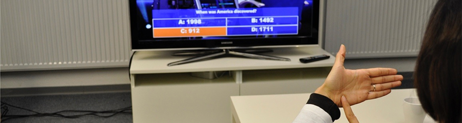
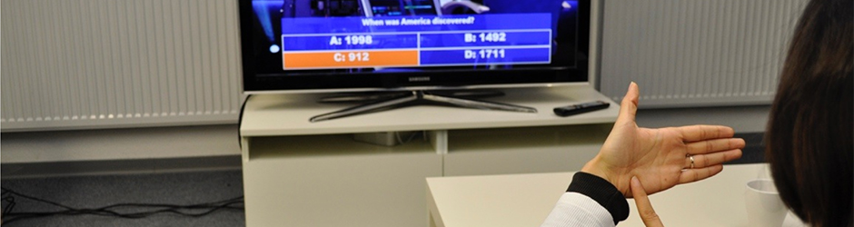

Jochen Huber
MIT Media Lab & Singapore University of Technology and Design
")
")
") 

Hello!
I am a postdoctoral fellow at the MIT Media Lab and Singapore University of Technology and Design. My research is situated at the intersection of Human-Computer Interaction, Interaction Design and Multimedia. I mainly work in the areas of mobile, tangible & body-based interaction, human & sensory augmentation, multimedia technologies and interactive installations.
Beyond code & electronics, I am in to guitars, volleyball and cooking. I am a bike nerd, so-so photographer, snowboard newbie and a Constance regular.
- Jul 21 Excited to serve as a program co-chair for Augmented Human '15.
- Jul 08 Further FingerReader coverage, e.g. AP, HuffPost, Wired, ABC, c|net, ...
- Jun 27 Journal article on mobile projected user interfaces published.
- Apr 17 FingerReader was featured on TechCrunch and Fox Business.
- Feb 12 SpiderVision accepted to Augmented Human '14 (Full Paper).
- Jan 16 Permulin accepted to CHI '14 (Full Paper).
Recent Publications
Permulin: Mixed-Focus Collaboration on Multi-View Tabletops
Lissermann, Huber, Schmitz, Steimle and Mühlhäuser
Full Paper. In Proceedings of CHI ’14.
FingerReader: A Wearable Device to Support Text-Reading on the Go
Shilkrot, Huber, Liu, Maes and Nanayakkara
Work in Progress. In Proceedings of CHI '14.

SpiderVision: Extending the Human Field of View
Fan, Huber, Nanayakkara and Inami
Full Paper. In Proceedings of Augmented Human ’14.

A Research Overview of Mobile Projected User Interfaces
Huber
Journal Article. Informatik Spektrum. 2014.